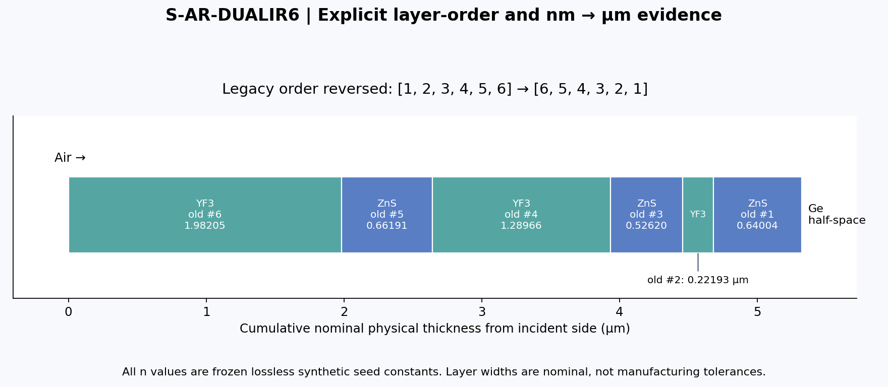
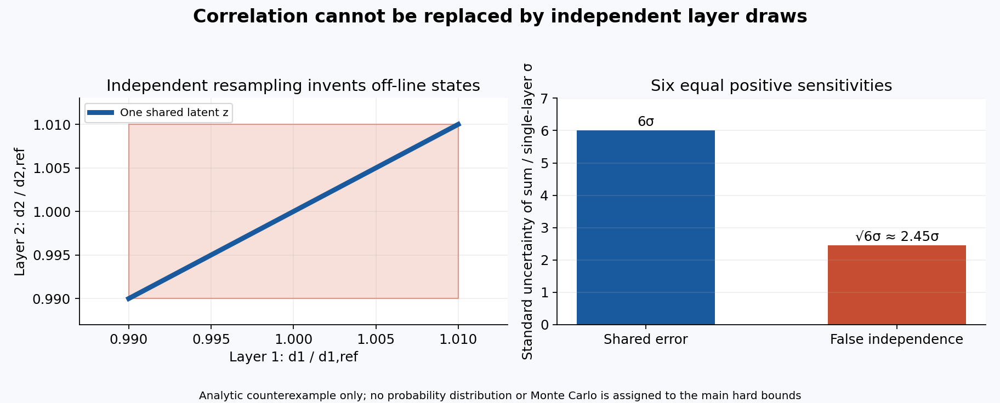
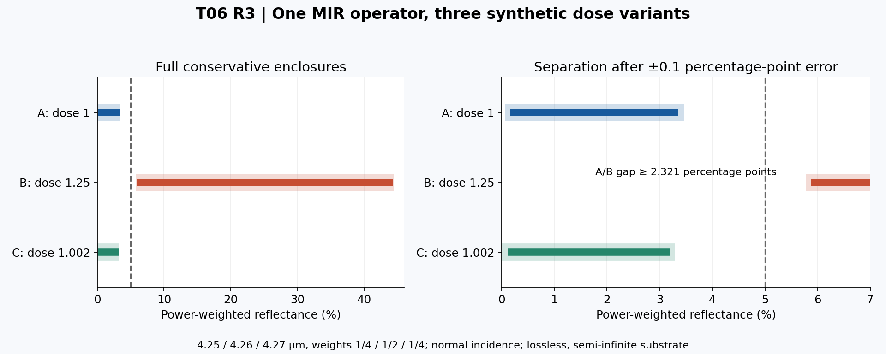

01 受限目标、旧37索引与本轮新增
1. 一句话问题
固定材料身份、光学算子和来源资格以后，把净厚度的集合及其跨层共享误差传递到可观测反射率；只在响应集合与声明的读数误差仍分离时，判断两种合成情形可区分。本轮不是重新分类37条膜系，不是重建R2的工艺流程schema，不拟合真实n/k，也不优化新生产配方。
T06首轮建立家族与起点图谱；R2完成工艺状态→有效膜参数→稳定光学测量算子，并说明假拟合。R3真正增加：有界全forward的来源继承、共享潜变量的集合映射、复数区间反射递推、带宽节点功率平均以及有误差的集合分离判据。判据不依赖“漂亮曲线”或Jacobian满秩。
2. 本轮受限工程目标
主例沿用旧 S-AR-DUALIR6 六层合成双IR AR起点，只考察4.26 μm附近的有限离散测量：波长4.25、4.26、4.27 μm，功率权重1/4、1/2、1/4。目标为该算子的R≤0.05。这个目标不等于3.5–5 μm全带最大反射率，不等于8–12 μm性能，也不等于真实分光光度计FWHM=20 nm。三个离散节点是算子本身，不是已证明收敛的连续带宽求积。
材料标签固定为ZnS、YF3，基片标签Ge；数值仍是旧无损常数n=2.2、1.5、4.0的synthetic surrogate。该选择不认可这些数为真实色散、薄膜参数或本机工艺状态。无实测膜参数，不能给出生产验收。
辅助保留 S-AR-GE-ZNS 单层10 μm种子，用于说明单位和四分之一波控制结构；不把它在10 μm的指标与主例4.26 μm指标混作同一比较。实际小测试另用明确的n=2/n_s=4理想单层构造解析反例。
3. 恢复证据没有升级
恢复JSON总计37条。本包 data/legacy_selection.json 只嵌入上述两条及原始全局约定、原JSON SHA-256；恢复交叉求解证据作为逐字副本保存。原交叉求解35条匹配、2条银膜因缺n/k跳过，只证明在同一旧无损输入上的代码一致性，不是物理验证。恢复记录中的公开论文既不是本包ZnS/YF3参数数据库，也没有给本机薄膜提供密度或状态证据。
原始层表方向是substrate→incident；算法从incident入射，必须反转：
| 入射侧层号 | 原始层号 | 标签 | 原nm | 转换后μm |
| 1 | 6 | YF3 | 1982.05 | 1.98205 |
| 2 | 5 | ZnS | 661.91 | 0.66191 |
| 3 | 4 | YF3 | 1289.66 | 1.28966 |
| 4 | 3 | ZnS | 526.2 | 0.5262 |
| 5 | 2 | YF3 | 221.93 | 0.22193 |
| 6 | 1 | ZnS | 640.04 | 0.64004 |
精确复现实际以JSON中二进制浮点编码为输入，再以有理数除1000。表格十进制为阅读值；保留原值及逐层转换证据，避免再次截断。基片不是内部相干层，入射介质也不加入层厚数组。
4. 未改变的旧资格
T04/T05共同来源仍是有限编码离散源、合成留存模型；continuous-source与真实材料认证均false。point12保留partial，point2保留conditional non-strict，正式DeepSeek→Seed→Sol链全部pending。本轮的区间光学算法不能追认旧工艺参数、事件梯度、主机运行或原来未完成的设备验证。

02 全forward资格与共享厚度集合
1. 不只取一个厚度点
本包复制T05桥接代码、全部冻结依赖及其T04/T03全forward。data/case.json 保存一次小规模Lambert调用的完整响应，含上游几何事件合同、retained_transfer界、净质量界、signed_thickness_change界、response_contract_sha256、bridge_contract_sha256、原始source合同和代码依赖SHA-256。数据文件又受外层reader清单绑定。
本次参数：Q_total∈[1.998,2.002]×10^-6 kg/s，合成参考有效膜密度ρ∈[1998,2002] kg/m³；源n=1、c=0；angular retention a=0.4，其他条件沿用复制的有限编码参考。panels参数16为每个可见时间段的划分数，输出总panel_count另见完整响应。Q_total/π只在T05桥接中转换一次；T06不再除π。
得到参考净厚度h∈[3.341431949868783,3.437304493314422]×10^-10 m。这个h是合成参考剂量单位，不把约0.34 nm叫作实际连续膜。h_ref取这次界的中点作为场景归一常量，不作为真值、标定或误差界。新的净厚度信息来自完整区间，不来自中点。
2. 数学映射与物理边界
令d_i^old为旧种子的几何层厚，v为指定剂量变体，定义
z = h / h_ref
d_i(z,v) = d_i^old × v × z
d_i在光学核中按μm使用；h/h_ref无量纲。每层都使用同一个z，不逐层独立采样。它等价于在零侵蚀、固定轨迹/留存规律/共同密度相对误差的合成族中，对各层施加确定性正质量剂量系数。它不是把轨迹时间简单放大，也不是声称ZnS和YF3具有相同真实密度或留存率。所有跨材料共同变化是假设，材料身份只用于固定合成光学函数。
因此：T04严格资格只覆盖原编码参考响应；T06对正线性映射和固定无损光学算子另给有界数值推导。两者拼接仍是synthetic条件结论，不能称为T04已验证真实六层工艺。若真实材料的留存、反应、密度、温度、成分或n/k随层改变，必须为各层重新建立对应样品状态及联合误差模型，不能复用这个秩1映射。
密度的不确定度可以描述同一状态的认知误差；它不自动意味着实际孔隙率被改变而n保持不变。若研究物理致密化导致的n、k、ρ共同变化，必须给联合材料模型或数据。本轮固定n/k的任务没有覆盖那种问题。
3. 相关性为何不能扔掉
以d_i=a_i QG/ρ为零侵蚀合成模型，微小相对变化满足δd_i/d_i≈δQ/Q+δG/G−δρ/ρ。公共变量贡献在所有层重复出现；若给定协方差Σ，局部近似为Cov(d)=JΣJᵀ，而不是只保留对角元。GUM说明显著相关输入应保留协方差，公共影响也可显式作为输入量。这只是标准不确定度的一阶处理；本包的硬区间传播不把它当严格界。[BR-S02]
两个反例：
- d1=a1 z、d2=a2 z时，d1/d2恒为a1/a2。把二者各自边界笛卡尔积，会凭空产生不可能的比值变化
- N个同等正敏感度层受一个公共标准误差σ影响，总和的标准不确定度为Nσ。错误独立化给√Nσ，会低估。对差量，公共误差反而可抵消，所以“独立一定更保守”也错误
本轮将Q、ρ、G的联合投影汇总为一个公共h区间，是对其可达集合的保守外包。并未给Q/ρ分布、概率或相关系数，也没有Monte Carlo。它保留跨层同向耦合，但会丢失上游更细的多变量关联，因此可宽、不可称最紧包络。未来增加材料组ρ_g或逐层独立误差时，需保留联合潜变量并在该空间划分。
4. 失败优先于计算
任何unknown/non-Lambert/库存不足状态都在光学前传播。negative_net、zero_or_crossing_net、ill_conditioned_net不取绝对值，不裁成正值，不丢弃“坏样本”重归一。当前参考继承的1e-15 m阈值是数学稳定性门槛，不是连续膜形成阈值。真实膜的成核、闭合和最小厚度条件仍unknown。
source_gate还核对整个bridge payload的哈希、依赖副本、状态身份、有效膜密度依据、净质量正性和上游input_uncertainty_qualified。只有高度点值的对象直接阻断；bulk密度、QCM设置密度或状态不匹配均阻断。哈希证明文件身份，不证明其物理真值或来源授权；数据更改需要新基线和审核。
参考：BR-S02，5.1–5.2。

03 可审计的复反射区间算法
1. 固定的光学与测量合同
严格限于：平面、局域、各向同性、非磁、常数实n>0、k=0，法向入射，空气入射，半无限实n基片，无散射。时间约定exp(−iωt)，场沿正传播方向exp(+ikz)。法向s/p功率相同；unpolarized因此不是任意角度的近似。输入非0°、未知散射、有限基片/背面、未声明偏振、未知谱核均拒绝，不能悄悄回落到这一核。
R2的稳定散射核支持更广条件，但本轮没有为其任意复n、斜入射、有限不相干基片建立区间证明。复制该核只用于窄点值交叉检查，不把它支持的条件默认为本轮区间算法也支持。多层Fresnel计算、吸收边界与相干/不相干处理的物理约定可参阅Byrnes；本包以下有理区间实现及资格证明为本轮原创推导。[BR-S01]
透过量T=1−R只表示无损栈进入半无限基片的通量，不是穿过真实Ge基片后的外部透过率。没有背面厚度、吸收、楔角、孔径、回光收集及相干性证据，不提供真实窗口透过率、吸收或OD。A=0是合成模型假设，不是测得零吸收。
2. 点值递推
从入射侧编号n0,n1,…,nL,ns，厚度d1,…,dL。法向实界面系数r_j=(n_j−n_{j+1})/(n_j+n_{j+1})。从最后界面开始，向入射侧逐层递推：
r ← r_last
z_j = r × exp(i 4π n_j d_j / λ)
r ← (r_interface + z_j)/(1 + r_interface × z_j)
R = Re(r)^2 + Im(r)^2
相位包含往返的4π而非2π。所有λ、d必须同单位；本包内部为μm。正实无损有限层和正实端口给0≤R≤1。算法没有使用会指数增长的吸收传播矩阵，也不把数值稳定称为测量可靠。
3. 区间算术与数值资格
exact_intervals.py 使用Python Fraction精确有理运算，每步结果再向外舍入到绝对网格2^-80。输入float表示其精确二进制值；明确字符串例如"4.26"表示该十进制有理数。不是依靠普通float计算后随意加epsilon。
- +、−、×、÷采用区间端点的精确代数；除数含零时拒绝
- π由Machin恒等式16 arctan(1/5)−4 arctan(1/239)包围。每项使用28项交错级数，下一项控制余项，再向外舍入
- 三角函数先用已包围的2π整数平移。选择哪个整数不影响恒等式正确性；必须把π不确定度一起平移
- 在有理中心c上保留20项。sin的余项界为|c|^41/41!，cos为|c|^40/40!；使用被略去的零系数阶得到Lagrange界。再加输入半宽r，因为sin、cos导数绝对值≤1
- 最后与[−1,1]相交。宽度达一周期时直接返回[−1,1]
- 复数为实/虚矩形区间；相除用(a+ib)(c−id)/(c²+d²)。若分母矩形包围零，输出该子格R∈[0,1]并标unresolved，不伪造更窄值
- R与[0,1]交集有明确的本核无损被动物理前提。不是将不被动错误输出静默clip为正常值
这保证每一步包住输入集合在该编码模型下的像。复数区间会失去Re/Im依赖，递推越多可越宽。它不是普适最紧区间求解器。2^-80是绝对网格，接近零的反射率界可停在约10^-24量级；不能把它宣称为80位相对精度。
4. 保留共享变量的分块
先在一个共享z区间上均匀划分K个子格。对子格J，所有d_i=d_i^old v J在同一次递推中求外包络。每个谱节点分别求R，再按非负归一权重作功率和；不是对复振幅平均。所有子格结果取hull形成总包络。
子格覆盖原z，端点的向外舍入可使相邻子格轻微重叠，不留下缝隙。层与层在子格内部仍有依赖过估计，但不会产生漏包围。只需更多细分通常可缓解这种膨胀；它不能缩小实际材料不确定度，更不能消除模型错误。
若有吸收n/k区间、非零AOI、跨层独立扰动、真实线展宽函数或有限基片，本轮实现直接不支持。完整参考算法是对本节明确定义的受限问题完整，并非对任意镀膜系统完整。
5. 完整工作算法
1. 读入并验哈希；来源unknown/负净厚度/库存不足/材料态不匹配立即返回状态
2. 固定配方、几何/光学层序、单位、光学函数、有限仪器节点及误差口径
3. 建立共享latent图及正厚度映射，不用点值替代边界
4. 按预定细分预算包围每个子格和谱节点；分母未决就保守返回，不以抽样顶替证明
5. 产生R集合、T进入基片集合和完整合同hash；预算、资格、未决格数随结果保存
6. 同合同下比较两个响应集合；不相交且读数误差扩张后仍不相交才条件可区分
7. 若要同一latent下的配对差量，对同一子格计算B−A后取hull；不能把两个不同批次暗中设成共同误差
8. 若计算昂贵，完整driver先输出plan_only；经安排后按检查点继续。当前不启动该批量计划
若有K个潜变量子格、W个离散谱节点、L层，主递推调用数为O(KWL)，有理数/舍入操作的实际成本另依赖数字位数。当前用固定80-bit dyadic网格限制分子分母增长；Taylor求值仍为精确有理运算。本实现保留每格R，存储O(K)，完整checkpoint按job写入。失败返回未决，而不是自动无限细分到通过。
默认driver给8/32/128/512子格×三个变体的12个有限任务。它不是设备队列、自动优化、蒙特卡洛或权限探测工具。只允许包内输出；检查点绑定完整输入与任务计划，变化后拒绝续跑。
参考：BR-S01。只存原创摘要及链接，未打包论文原文。
04 哪些差异能区分，哪些仍未决
1. 集合判据先于拟合
设给定材料/算子/来源条件下，两个候选真实响应的可达集合分别包含于I_A、I_B，读数的确定性绝对误差分别属于E_A、E_B。若扩张后的I_A+E_A和I_B+E_B不相交，则任何属于这两个合成条件族的单次读数都不可能同时解释为两者。若重叠，只能报unresolved；包络过宽也会造成重叠，不证明候选实际等价。
本轮误差取E=[−0.001,+0.001]，是人为声明的反射率绝对界，即±0.1个百分点。它不是仪器规格、标准不确定度或95%置信区间。VIM关于计量相容性的定义提醒比较需同一measurand并考虑相关性，但本轮使用的是自定义确定性集合分离判据，不冒称VIM或某生产标准的验收认证。[BR-S03]
2. 可复现的受限MIR结果
每个候选仅8个共享latent子格、3个谱节点、6层。三个确定性剂量变体A=1、B=1.25、C=1.002；没有为结果优化配方。B刻意选择明显扰动来说明可区分情形，C说明小变化未决；选择不是实际工艺偏差概率或设备容差。名义点曾作四个小探索探针，记录在验证台账；点值不构成范围证书。
| 合成变体 | d_i倍数 | 无读数误差R外包络 | 加±0.001后 |
| A | 1 | [0.0015697083, 0.0335950767] | [0.0005697083, 0.0345950767] |
| B | 1.25 | [0.0588066188, 0.4429920961] | [0.0578066188, 0.4439920961] |
| C | 1.002 | [0.0010926598, 0.0318717456] | [0.0000926598, 0.0328717456] |
A与B扩张包络之间还留0.0232115421，即2.32115421个百分点的间隔，因此在这些条件下可区分。A在该有限测量的R≤0.05目标内，B在目标外，即使纳入声明读数界也成立。A与C重叠，只能未决。不能将A的结论推广成整个MIR波段性能。
同一latent下的C−A配对差量外包络为[−0.0251920126,+0.0228872655]，8格预算下仍跨零。这条区间很宽，不能据此认定两设计无差别；也不能把配对误差假设移植到不同批次。当前B包络同样较宽，证明了分离不需要最紧界，未证明这个宽度都来自真实物理变化。
3. 不能拿端点/抽样替代界
理想单层n0=1、n_f=2、n_s=4，λ=4 μm。厚度区间[0.45,0.55] μm的两端反射率都为正；中间0.5 μm满足四分之一波阻抗匹配，R=0。只算区间两端会错过内部最小值。多层共振会更复杂，因此端点取极值、稀疏谱线、随机样本分位数不能在没有额外定理时称严格边界。
这里的零点由于绝对dyadic网格，输出上界约1.65×10^-24。测试最初错误要求小于10^-35，已修正为10^-20；没有修改核使结果迎合断言，也没有把有限数值界解释成实验零反射。
4. 必须保留的拒绝反例
| 反例 | 行为 | 禁止的“修复” |
| 只有height_estimate点值 | point_only阻断 | 把[x,x]补成没有来源的bounds |
| non-Lambert或unknown源 | 原状态保留，无R | 退回Lambert结果或自动tooling |
| 负净厚度/跨零/near-zero | 保留原状态，无R | abs、max(d,epsilon)、删样本 |
| 库存不足 | inventory_unresolved | 假设侵蚀后仍是原材料层 |
| bulk/QCM密度代替film | unknown_material_state | 用相同单位掩盖样品状态差异 |
| n/k与密度样品不同 | unknown_state_mismatch | 同材料名就视为同一状态 |
| 旧常数n写成实测 | 拒绝 | 更改来源标签升级资格 |
| 改厚度不更新全forward绑定 | unbound_or_modified | 保留旧hash作为装饰 |
| 有限基片、未知散射、45° | 拒绝 | 沿用法向半无限无损核 |
| 带宽边缘超材料域 | 拒绝 | 只检查中心4.26 μm |
| 错误归一权重 | 拒绝 | 把任意权重偷偷归一 |
| 响应集合重叠 | unresolved | 用低残差或满秩宣判唯一 |
单点R/T无损时满足T=1−R；两者不是两个独立信息维度。添加同算子T不能自动打破A/C重叠或材料/厚度非唯一。要得到真实可分辨性，需要新的独立观测、合理噪声模型及材料状态证据；不能用更多自由拟合参数替代。
参考：BR-S03。

05 从合成推演走向实验需要补什么
1. 使用本包的正确顺序
首先确认观测到底是什么：同一点/同区域的镜面R、总半球R、外部透过率还是进入基片的通量。其次固定样品状态与测量合同，再定义误差；最后才进行有界传播和区分判断。仪器上显示一个稳定数字，不能自动给这些问题提供答案。
2. 分层证据要求
| 对象 | 需要的原始证据 | 当前状态 | 补齐后影响 |
| 源角谱与归一 | 有时间戳源/晶振/见证片原始数据、捕获率和时钟映射 | unknown真实源；仅Lambert合成参考 | 决定T05桥接或需新源模型 |
| 每层净留存 | 入射、脱附、反应、再溅射与库存余额或独立净质量数据 | synthetic | 排除负净质量/耗尽后错误层身份 |
| 几何厚度 | 独立截面/台阶/适当计量与空间位置 | unknown | 给质量→厚度和光学厚度分离证据 |
| 有效膜密度 | 与光学样品同成分/温度/孔隙/处理状态的密度证据 | synthetic | QCM设置、块材密度不能代替 |
| 光学n,k | 相同制程/温度/波段/状态的薄膜参数与拟合模型 | 旧无损常数种子 | 允许替换surrogate，仍需误差和适用域 |
| 基片 | 牌号、厚度、n,k或体吸收、背面膜、楔角 | synthetic半无限Ge | 决定有限相干或不相干模型 |
| 测量算子 | AOI、NA/角分布、偏振、谱线展宽、孔径、采样面积 | 明确合成三节点 | 决定真正可比较的measurand |
| 联合误差 | 同Q、同ρ、同仪器、同批次的共享因子与独立项 | 显式秩1合成模型 | 决定分块空间与配对/非配对差量 |
| 读数误差 | 校准、重复性、漂移、杂散光和环境预算 | 合成±0.001 | 决定区分门槛，不能借用示例值 |
本表是待办的实验设计需求，不是本轮新建设备任务，也未提交预约、付费、登录或远程执行。
3. 背面、角度与带宽易错处
真实IR窗口常需要有限厚基片和背面。若不收集走离后的多次反射光，R2的all-orders全收集模型也不能直接用；若仍有相干条纹，不应以“不相干平均”消掉不喜欢的振荡。真实Ge吸收、温度依赖和掺杂状态缺失时，1−R不等于窗口外部T。
非零AOI时s/p应分别算功率，光束NA和角谱也进入积分。对多层滤光片，带宽平均可能将窄结构的峰/谷抹平。真实仪器的FWHM不能唯一确定核尾部；如果只提供连续线形的有限求积节点，还需截断尾部和积分余项证据。本包把三节点离散算子定义为目标，从而没有声称连续核积分已完成。
4. 不确定度、区间、可辨识性各回答不同问题
确定性输入界支持最坏情形外包，但实际界是否覆盖真实样品需要来源证明。概率分布传播支持某种覆盖概率，但需要分布和相关性依据。局部Jacobian只给在固定模型附近的敏感方向；满秩不保证全局唯一、噪声下稳定或正确模型。点拟合收敛不保证三者中的任何一个。
本包没有新增校准、没有从光谱倒推出ρ、没有从QCM显示厚度得到n/k。即使A/B分离，也只能辨认已限定的两类合成厚度变化；不能据此唯一归因于Q、ρ、留存率或材料变化。这是T05源-留存不可辨识性在光学终端的延续。
5. 有限预算下优先级
在真实数据缺失时，追加千倍采样只会把错误模型算得更精细。先补同状态薄膜参数、独立几何厚度与仪器合同，之后才决定是否需要多角度、椭偏、总R/T或更多谱节点。下一阶段应先选择一个可证伪问题和留出观测，再安排计算或实验。
06 复现、审查、独立阅读与冻结
1. 已执行与未执行
已执行：一次小的合成Lambert上游配置，三种变体各8共享latent格×3谱节点、一个8格配对差量，39项小测试，最多一次独立窄光学核查（5个单点、无扫频），本地PNG生成与实际像素检查，离线reader资源与哈希检查、脱离兄弟目录的reader自检。生成过程曾更新演示B从1.10为1.25并重跑小例，不属于正式批量扫描；探索与修正见执行台账。
未执行：完整12任务批量计划、任何设备/主机配额借用、真实光学/材料标定、现场验证、正式DeepSeek/Seed/Sol链。HTML布局未验证：父任务确认同云环境localhost浏览器被拒绝，headless Chromium经一次升级后仍socket权限拒绝。本轮不重复，不以另一浏览器/后端绕过。静态结构、链接、离线资源检查不冒充截图布局验证。
2. 小复现
在此目录、已有依赖环境中：
PYTHONDONTWRITEBYTECODE=1 PYTHONPATH=models python -m unittest discover -s tests -v
PYTHONDONTWRITEBYTECODE=1 python models/validation_driver.py
PYTHONDONTWRITEBYTECODE=1 python models/reader.py --directory .
第一项约39项小测试；第二项只输出plan_only；第三项验证清单、SHA-256、资源链接和自包含性。冻结后不要原地重建图或结果再保留旧清单。若需再生，复制到新的候选目录并完整重冻结，保持本基线不变。
build_inputs.py用于重建一次小上游桥接；run_tiny.py用于三个8格演示；validation_driver.py --execute只提供未来执行接口，不代表授权。完整driver没有联网、任务调度、主机探测、CAPTCHA或密码逻辑。正式计算要先由用户安排，不能把有执行入口当作已执行。
3. reader与哈希层次
data/frozen_dependencies.json绑定53份逐字复制依赖，原始T05内部清单继续保持相对路径可解- 完整case保存全forward及来源合同，材料映射绑定整个bridge payload；光学结果保存response/bridge/material/measurement/optical合同hash
verification/reader_manifest.json列出reader所有实际payload文件、精确字节数及SHA-256，不包含其自身或运行回执以避免循环verification/freeze_receipt.json绑定manifest自身hash、ZIP字节数/sha256、payload文件数、范围核对和QA状态- reader ZIP包含payload和manifest；其ZIP内部文件集合必须严格等于清单集合加manifest。精确对应关系由孤立解包校验，而非只检查ZIP能打开
- 原目录之外的文件哈希与初始快照比较；清单/回执不宣称自我哈希，也不把文件哈希当物理认证
包内只含原创文字/代码/图、所选种子数据与既有项目依赖/恢复证据。不含第三方论文原文、Library账户或文件ID、登录凭据。没有上传、发布、push或产品变更。
4. 状态与停点
当前：local_freeze，formal_status=awaiting_seed；实际执行者自检和一次原生窄核查只标明各自范围。指定模型链未实际完成，不冒充正式审核。point12=partial_unchanged，point2=conditional_non_strict_unchanged，真实参数unknown，production_qualified=false。
T07_ROUND3_HANDOFF.md仅为下一阶段候选。本轮到本地冻结停止，不开始T07，不扩展成新优化任务。
来源与完整算法
- BR-S01: Steven J. Byrnes, Multilayer optical calculations (v5) 来源页面
- BR-S02: JCGM 100:2008, section 5, official ISO HTML 来源页面
- BR-S03: JCGM VIM3 2.47 metrological compatibility 来源页面
- BR-L01: Recovered 37-record coating stack JSON and cross-solver audit
- BR-L02: Frozen T04/T05 round3 source bridge and full response
- BR-L03: T06 round1/R2 reports and T07 optical kernel copy